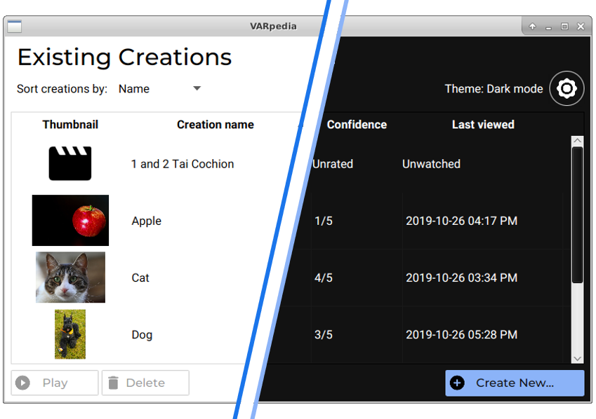
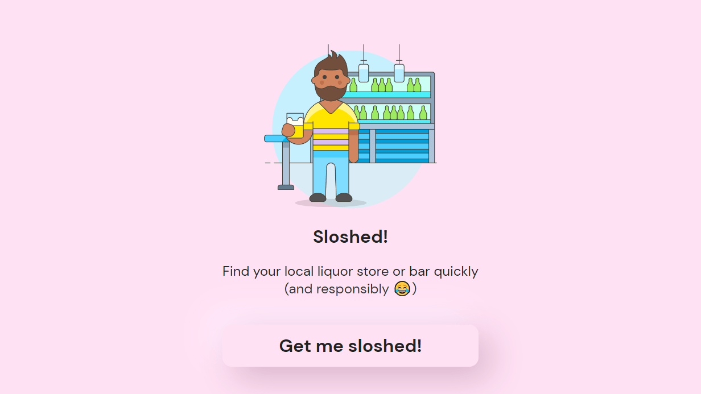
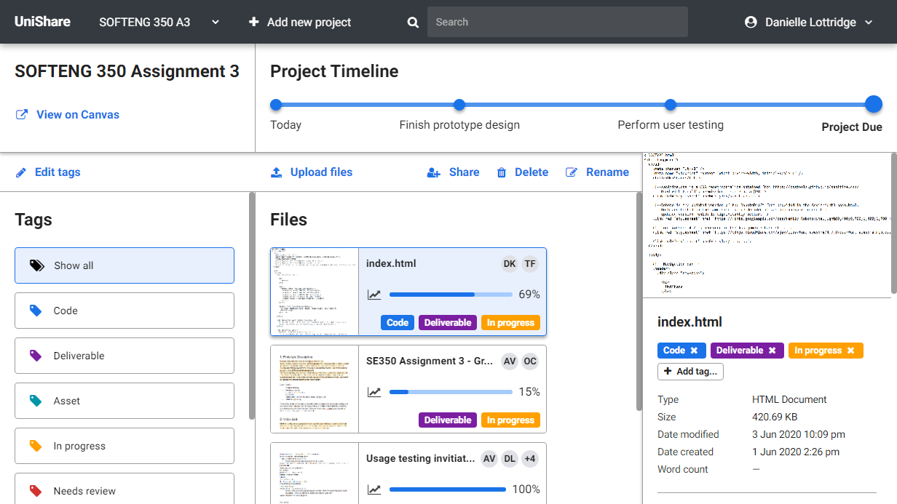

VARpedia
Java
object-oriented application that helps users learn
about new terms in the English language using visual, aural, and
reading methods. Utilises JavaFX to deliver a customisable
design optimised for second-language learners.
The code received a 95% mark in SOFTENG 206.

engrevue.co.nz
React/Gatsby
responsive landing page website that promotes the UoA
Engineering Revue, averaging over 1000 unique visitors a month.
I built the index page, which acts as the gateway for ticket sales
for the annual comedy variety show.

Sloshed
Vanilla HTML/CSS/JS
webapp built for the 2020 Summer of Tech Create Camp that utilises
responsibility features in the search for a bar on a night out.
I led the front-end development as part of a team of six,
winning the hackathon's award for Best Design.

UniShare
Vanilla HTML/CSS/JS
hi-fi prototype that explores a design of a cloud file-sharing service
to aid university student group coursework.
I built a CSS framework of components from scratch in less than a week,
receiving an 87% mark in SOFTENG 350.

dikunong.nz
Vanilla HTML/CSS
responsive website that showcases my
online profile and portfolio.
Utilises CSS Grid to be fully responsive and loads
at blazing fast speeds on any internet connection.
You happen to be looking at it
right now!

K-Colour Image Converter
MATLAB
script that implements the K-means algorithm to
convert a full-colour JPEG image into one that uses
only k number of colours. I implemented matrix vectorisation
to increase performance by a factor of hundreds,
receiving a 100% mark in ENGGEN 131.